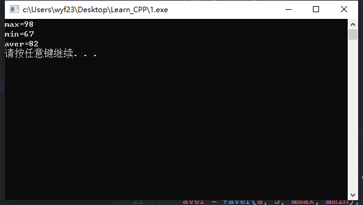

函数与指针
一个函数在编译时被分配一个入口地址，这个入口地址就称为函数的指针。在C++中，函数名代表函数的入口地址。
指针作函数的参数
指针作函数的参数，具有以下用途：
- 指针作为函数的参数，这时形参接受的是实参的地址。函数中通过对指针的间接访问实现参数的按“引用传递”功能。
- 设置多个指针参数可以从函数中带回多个结果值
- 对传递一块连续的内存区域数据，传递首地址比传递数据值，不仅开销小，而且效率高。
例如1：变磁轭交换2个变量值的函数（地址传递）
1
2
3
4
5
6
7void swap(int *xp,int *yp)
{
int t;
t=*xp;
*xp=*yp;
*yp=t;
}调用时，
swap(&x,&y);1
2
3
4
5
6
7
8int main()
{
int x=2,y=3;
cout<<"调用前：x="<<x<<",y="<<y<,endl;
swap(&x,&y);
cout<<"调用后：x="<<x<<",y="<<y<,endl;
return 0;
}调用前：x=2,y=3
调用后：x=3,y=2例如2：利用指针参数带会函数中的多个值
计算一维数组元素的平均值，并能带会数组中的最大值与最小值。
函数原型设计：double faver(int s[],int n,int *max,int *min);
其中s为一维数组，n表示数组元素个数，max指向最大值，min指向最小值，将平均值作为函数的返回值1
2
3
4
5
6
7
8
9
10
11
12
13
14
15
16
17
18
19
20
21
22
23
24
25
26
27
using namespace std;
double faver(int s[], int n, int *max, int *min)
{
double aver = s[0];
*max = *min = s[0];
for (int i = 1; i < n; i++)
{
aver += s[i];
if (s[i] > *max)
*max = s[i];
if (s[i] < *min)
*min = s[i];
}
return aver / n;
}
int main()
{
int a[5] = {80, 89, 67, 76, 98}, max, min;
double aver;
aver = faver(a, 5, &max, &min); //调用函数
cout << "max=" << max << "\n"
<< "min=" << min << endl;
cout << "aver=" << aver << endl;
system("pause");
return 0;
}执行结果：

返回指针的函数
1 | 类型 *函数名(形式参数表) |
其中，类型 * 为函数的返回值类型，是一个指针类型
例： 编写函数，返回字符串中首次出现的非空格字符串开始的字符串。
如：” using namespace str;”
返回”using namespace str;”
原理：将指针移动到非空格字符位置1
2
3
4
5
6
7
8
9
10
11
12
13
14
15
16
using namespace std;
char *noblank(char *str)
{
while (*str == ' ')
str++;
return str;
}
int main()
{
char *s1 = " using namespace str;", *s2;
s2 = noblank(s1);
cout << s2;
system("pause");
return 0;
}
指向函数的指针
使用指向函数的指针变量可以存放函数的指针。
指向函数的指针变量定义格式如下：函数返回值类型 (* 指针变量名) (形参类型列表);
例如： 定义指向double型函数的指针变量，该函数有一个double型参数double (*pf)(double);pf=sqrt;//pf 指向一个平方根函数
这时，使用pf可以调用该函数。
如：`cout<<(pf)(2.0)<<endl; // 输出根号2的值与：cout<<sqrt(2.0)<<endl; //等价`